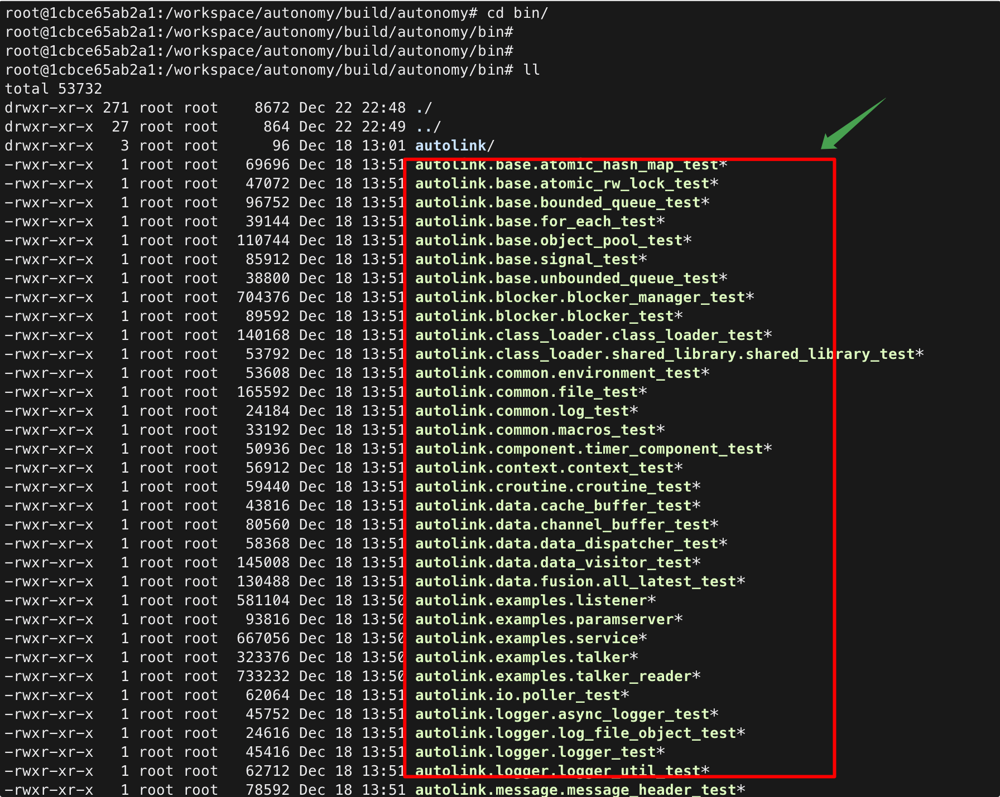

4. 离线导航测试
autonomy_nav_test 在无 ROS 2 环境下跑通完整导航链路：Map → Planner → Controller → Navigator（BT 或直驱），并用差速模型仿真里程计与 TF。
源码：autonomy/system/tools/nav_test.cpp
4.1 与其它工具对比
工具 |
覆盖范围 |
|---|---|
|
完整栈：BT / 直驱、规划 + 控制 + 恢复 |
|
仅全局规划 + 可视化 |
|
规划 + 控制器闭环，不跑 BT |
Autonomy 主进程 |
仅 |
验证行为树、NavigateToPose、恢复节点时用本工具。
4.2 构建
cmake -G Ninja .. -DBUILD_TOOLS=ON
ninja autonomy_nav_test
# 产物：build/bin/autonomy_nav_test
4.3 环境变量
变量 |
说明 |
|---|---|
|
BT 插件 |
|
终端日志 |
export AUTONOMY_BT_PLUGIN_PATH=/path/to/autonomy/build/lib
4.4 命令行参数
参数 |
默认 |
说明 |
|---|---|---|
|
（必填） |
配置根目录 |
|
|
主配置 Lua |
|
1 / 1 / 0 |
初始位姿 [m, rad] |
|
5 / 5 / 0 |
目标位姿 |
|
|
BT 导航 vs 直驱 |
|
120 |
超时 [s] |
|
0.1 |
里程计仿真步长 [s] |
|
|
与 |
|
|
机器人基座帧 |
./build/bin/autonomy_nav_test --help
4.5 运行示例
BT 模式（推荐）
./build/bin/autonomy_nav_test \
--configuration_directory=config \
--start_x=1 --start_y=1 --goal_x=5 --goal_y=5 \
--use_bt=true --timeout_sec=120
直驱模式
./build/bin/autonomy_nav_test \
--configuration_directory=config \
--start_x=1 --start_y=1 --goal_x=5 --goal_y=5 \
--use_bt=false

4.6 数据流
autonomy_nav_test
├─ CreateAutonomy → Start → Configure
├─ [sim thread] cmd_vel → 积分 → UpdateOdometry + map→base_link TF
└─ NavigateToPose
├─ use_bt=true → BT (Plan / Follow / Recovery…)
└─ use_bt=false → NavigateDirectToPose
4.7 规划预检
规划失败时，可先用规划工具确认起终点可达：
./build/bin/autonomy_planning_test \
--configuration_directory=config \
--output_dir=/tmp/planning_vis \
--start_x=1 --start_y=1 --goal_x=5 --goal_y=5